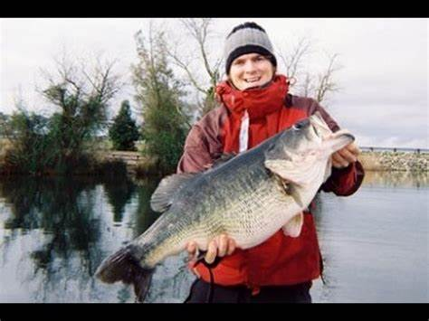

The one that got away
Every bass fishemen, or I guess fishermen in general, all have that one story about the one that got away. They also have hundreds of other storys, likely more false than true. This is the best bass fishing story I could find.
A little help from above
It was cold and rainy on Feb. 16, 2005, when Allen and a friend took their aluminum boat to an electric-motor-only lake near Elk Grove, Calif., called Rancho Seco.
The 200-acre lake is in the shadow of the Rancho Seco nuclear power plant. Rancho Seco is gin clear, and hydrilla grows out to the middle, creating points and edges throughout. Knowing the lake well, Allen made a lap, stopping at all of the spots where he had experienced quality catches or encouraging follows on his swimbait in the past. Armed with his Huddleston ROF 12, he made one circle around the lake.
Three hours later, he hadn't had a bite. He had managed, however, to break off his Huddleston 12 on a cast, and had resorted to his ROF 5 model (meaning it sinks 5 feet every 10 seconds). He fished the lure on a 7-foot medium-heavy rod and Shimano Curado 200 with 20-pound-test Maxima Ultragreen monofilament. He described his tackle as "woefully underpowered" because "we were learning as we went, we didn't have the resources we do today, and everything was experimental."
After completing his lap, he turned the boat around near the launch ramp on the south end of the lake, and reversed course towards the dam. "The spot is a great one because it has a point that extends towards deeper water, and it's near the ramp where they plant trout," he said. "I lined myself up to make a cast parallel to the dam so I could work the deep weedline and the point."
Allen tried to make an extra long cast and backlashed his reel. The heavy bait snapped his line. "I kicked the trolling motor on high and chased toward the end of the line," he explained. "Huddlestons were very hard to come by, and I had just lost one of the two I had. It was important I get that bait." Ironically, just moments before he had put on a pair of gloves in the cold rain, something he doesn't like to do because it reduces feel.
"I'm glad I did, because as I began to hand line the bait to the boat, I felt a thump," Allen said. "I reached as far as I could with both hands and jerked. Then I told my buddy that I thought I had a fish on." A second later, a giant fish broke the surface of the lake. "I brought her to the boat as quickly as I could by hand, and she jumped three more times," he said. "I'm lucky she didn't run deep, because she could have really hurt me with as much line as I had wrapped around me." As she neared the boat, his partner lunged toward the fish with the landing net in one hand while holding the line with his other hand. The fish reacted by surging under the boat.
Having no control, Allen spun to the other side as the fish jumped, breaking the line on the aluminum hull in the process. "I had the net by this point and thrust it under her. She landed in it!" he said. "We pulled her in the boat, and looked in her mouth to see only one hook point on her gill. We weighed her at 17-2, took pictures and released her. A couple seconds later, she came to the surface belly up." Allen climbed into the water at the launch ramp, and for 45 minutes in the cold February water, attempted to revive her. After two attempts to swim, she turned up for the last time.
"I had her mounted, and I see her every day," he said. "I'd rather have seen her swim off, but she reminds me that sometimes, when you least expect it, when everything goes wrong, a little help from above can overcome it all."
